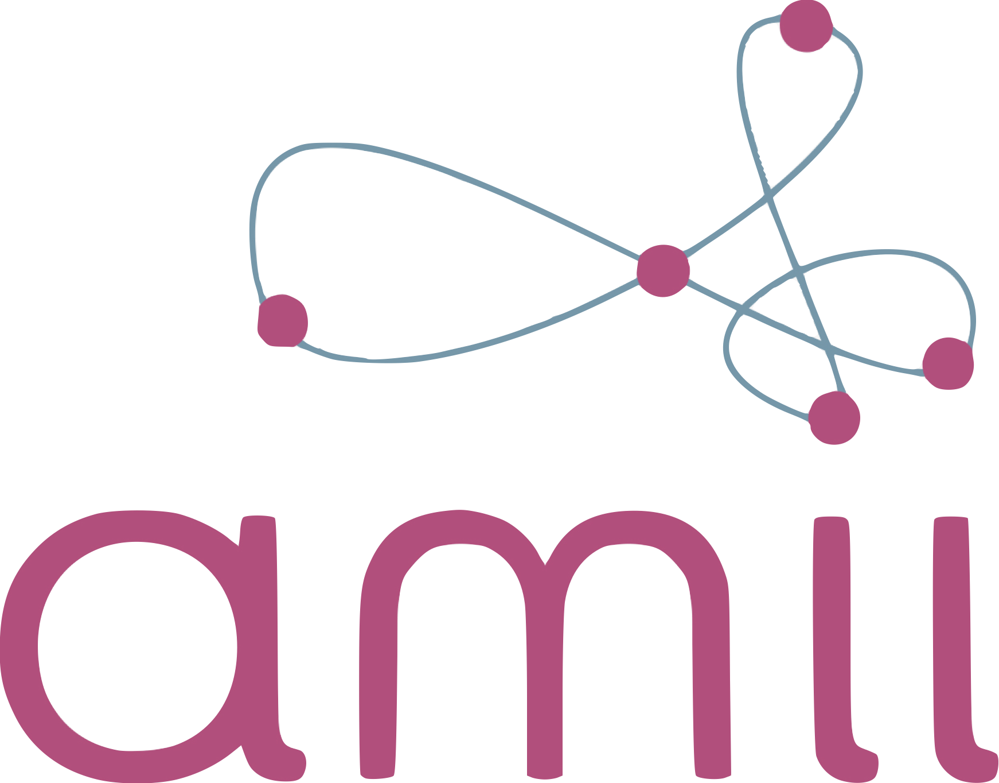
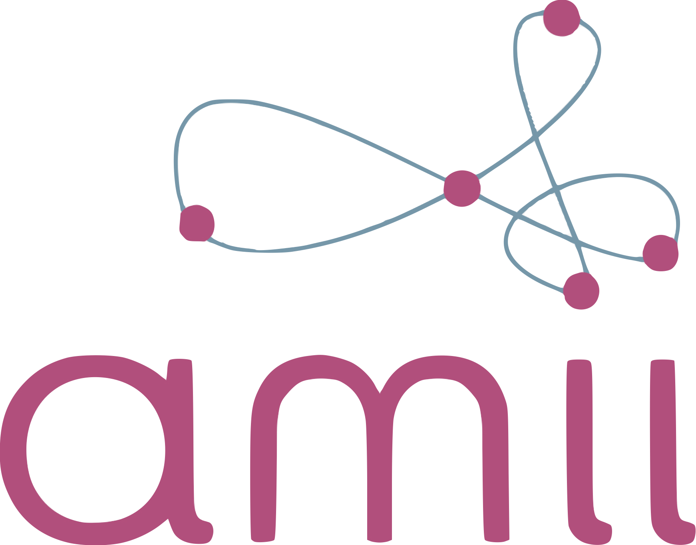

Publications
2025:
- Golnaz Mesbahi, , Buddy Brown, Joey Ton, Jerome Clarston, "DDHC: Domain-Driven Hierarchical Classification Framework for Stream Type Identification", IJCAI 2025 Artificial Intelligence & Sustainability Workshop. Learn More
- S Schoepp, M Jafaripour, Y Cao, T Yang, F Abdollahi, , S Miwa, Y Mitsuka, O Zaiane, "The Evolving Landscape of LLM-and VLM-Integrated Reinforcement Learning", IJCAI 2025. Learn More
- M Jafaripour, , S Miwa, Y Mitsuka, O Zaiane, "Adaptive Iterative Feedback Prompting for Obstacle-Aware Path Planning via LLMs", LM4Plan Workshop at AAAI 2025. Learn More
- Zahin Sufiyan, , Shotaro Miwa, Yoshihiro Mitsuka, Osmar Zaiane, "A Study of the Efficacy of Generative Flow Networks for Robotics and Machine Fault-Adaptation", Engineering Applications of Artificial Intelligence, 2025. Learn More
- Yoshihiro Mitsuka, , Z Sufiyan, S Schoepp, S Miwa, O Zaiane, "TLXML: Task-Level Explanation of Meta-Learning via Influence Functions", arXiv preprint arXiv:2501.14271, 2025. Learn More
- S Schoepp, M Taghian, S Miwa, Y Mitsuka, , O Zaiane, "Enhancing Hardware Fault Tolerance in Machines with Reinforcement Learning Policy Gradient Algorithms", arXiv preprint arXiv:2407.15283, 2024. Learn More
- Mehran Taghian, Shotaro Miwa, Yoshihiro Mitsuka, Johannes Günther, , Osmar Zaiane, "Explainability of deep reinforcement learning algorithms in robotic domains by using Layer-wise Relevance Propagation", Engineering Applications of Artificial Intelligence, 2024. Learn More
- , Omid Ardakanian, Pierre Boulanger, "Grey-box Bayesian Optimization for Sensor Placement in Assisted Living Environments", the 38th AAAI Conference on Artificial Intelligence, 2024. Learn More
- , Eleni Stroulia, and Ioanis Nikolaidis. "Smart Indoor Space Simulation Methodologies: A Review." IEEE Sensors Journal 22.9 (2022): 8337-8359. Learn More
- , Ioanis Nikolaidis, and Eleni Stroulia. "Towards a simulation framework for smart indoor spaces." Sensors 20.24 (2020): 7137. Learn More
- YiJi Zhao, Farnoosh Fatemipour, , Eleni Stroulia. "BIM sim/3D: multi-agent human activity simulation in indoor spaces." 2019 IEEE/ACM 5th International Workshop on Software Engineering for Smart Cyber-Physical Systems (SEsCPS). IEEE, 2019. Learn More
- , Alexander Petcovici, Eleni Stroulia, and Ioanis Nikolaidis "Simulation-Based deployment configuration of smart indoor spaces." 2019 IEEE 5th World Forum on Internet of Things (WF-IoT). IEEE, 2019. Learn More
- , Dillam Jossue Diaz Romero, Eleni Stroulia, Antonio Miguel-Cruz, Lili Liu, "Sensor-enabled Functional-Mobility Assessment: An Exploratory Investigation." 2019 IEEE 5th World Forum on Internet of Things (WF-IoT). IEEE, 2019. Learn More
- , Sepehr Kazemian, and Omid Ardakanian. "Data-driven models for building occupancy estimation." Proceedings of the Ninth International Conference on Future Energy Systems. 2018. Learn More
- , Athar Mahmoudi-Nejad, and Hadi Moradi. "A framework for easier designs: Augmented intelligence in serious games for cognitive development." IEEE Consumer Electronics Magazine 8.1 (2018): 19-24. Learn More
- , Pegah Soleiman, and Hadi Moradi. "A comprehensive review of technologies used for screening, assessment, and rehabilitation of autism spectrum disorder." arXiv preprint arXiv:1807.10986 (2018). Learn More
- , Pegah Soleiman, and Hadi Moradi. "Feasibility of using sphero in rehabilitation of children with autism in social and communication skills." 2017 International Conference on Rehabilitation Robotics (ICORR). IEEE, 2017. Learn More
- , Khalil Taheri, Mohammad-Reza Farahnak, Mostafa Derafshian, Morteza Ghavami, and Hadi Moradi. "Introducing i-puck: An educational mobile robot." 2016 4th International Conference on Robotics and Mechatronics (ICROM). IEEE, 2016. Learn More
- F Soltani, F Eskandari, , "Developing a gesture-based game for deaf/mute people using microsoft kinect." 2012 Sixth International Conference on Complex, Intelligent, and Software Intensive Systems. IEEE, 2012. Learn More
Shadan Golestan
 

golestan@ualberta.ca
golestan@amii.ca
Alberta Machine Intelligence Institute (Amii)